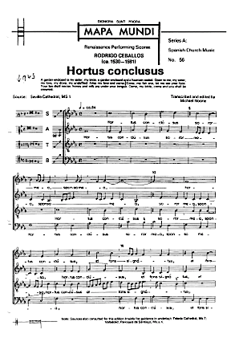

Hortus Conclusus is a motet by Spanish renaissance composer Rodrigo de Ceballos (ca 1530-1581)

The motet is set to a text from the Song of Songs:
Hortus conclusus soror mea, sponsa mea, hortus conclusus et fons signatus. Aperi mihi, o soror mea, amica mea, columba mea, immaculata mea. Surge propera amica mea, et veni.
Veni, speciosa mea, ostende mihi faciem tuam. Favus distilans labia tua, mel et lac sub lingua tua. Veni sponsa mea, veni coronaberis.
Translation:
A garden enclosed is my sister, my bride, a garden enclosed and a fountain sealed. Open to me, my sister, my love, my dove, my undefiled. Arise my love and come.
Come, my fair one, let me see your face. Your lips distil nectar, honey and milk are under your tongue. Come, my bride, come and you shall be crowned.